Celebrity Style Watch
Celebrity style, read as trend signals
Every week Forecut tracks red carpets, premieres, award shows and celebrity weddings across six regions, records who wore what and by whom, and links each look to the trend details it confirms.

Forecut illustration. We do not publish celebrity or red-carpet photographs; follow the source links to see the original looks.
This week in celebrity style
- Velvet tailoring for men: Eddie Redmayne (Armani, cobalt blue) in Los Angeles and Tom Hiddleston (Ralph Lauren Collection, double-breasted) in London.
- Corsetry everywhere: a lace-up corset dress in London, steel boning in New York, corset blouses on Mumbai sarees and corseted bridal gowns in Nigeria.
- Crystal and bead embroidery as the evening finish, from Rome to Mumbai to Lagos wedding guests.
- Black tie gets a single loud note: a bright yellow shirt and tie (Loewe), a polka-dot pocket square (BOSS), a white floral brooch (Tom Ford).
- SS27 runway pieces are already on red carpets (Mugler, Roberto Cavalli, Erdem, Ralph Lauren, Tom Ford), months before they reach stores.
IBTIDA Ek Mehfil Diwali celebration
Mumbai, India
- Shilpa Shetty
Ivory lace saree with a sleeveless, corset-style blouse embellished with pearls, beads and crystals; crystal bag with beaded tassels. - Huma Qureshi
Rust-orange and gold Anarkali with zari embroidery, gota patti and mirror work. - Mrunal Thakur
Custom black saree with a structured, corset-style blouse. - Shriya Saran
Shimmering silver-grey saree with a heavily embellished blouse and a layered kundan and pearl choker. - Nimrat Kaur
Sheer brown saree with metallic embellishment and a deep-neck blouse embroidered in silver and gold. - Urmila Matondkar
Pista-green gharara set with a heavily embellished kurta.
Sources: Free Press Journal. Asia forecast →
Esquire UK's Better Men Honours
Claridge's, London
- Tom Hiddleston · Ralph Lauren Collection
Velvet double-breasted suit. - Sam Claflin · Tom Ford (Fall 2026)
Patterned evening coat with a draped scarf. - Aaron Pierre · BOSS
Black double-breasted tuxedo with a polka-dot pocket square. - Haider Ackermann · Tom Ford
Black tailoring with a white floral brooch. - Kit Butler · McQueen
Black suit with a skull-print tie.
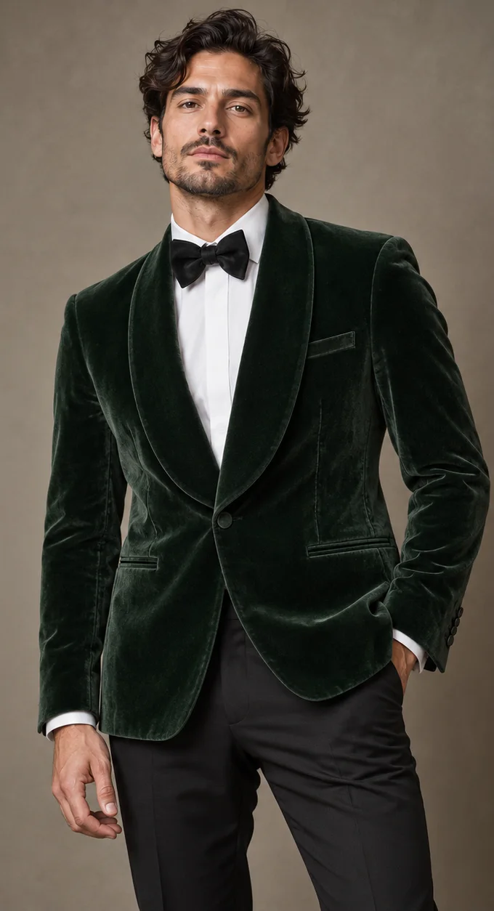
Velvet dinner jackets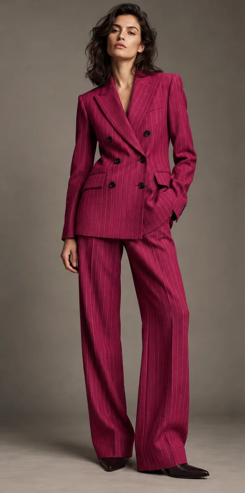
Pinstripe double-breasted suitsOversized lapel flower brooches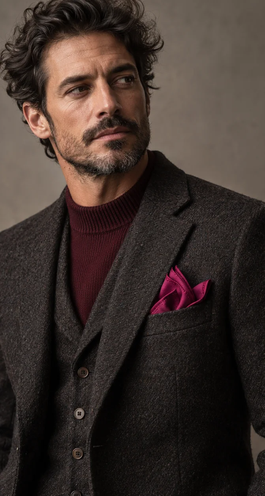
Pocket squaresSources: Red Carpet Fashion Awards. Europe forecast →
Rome Film Festival premieres and parties
Rome, Italy
- Jenna Ortega · Roberto Cavalli (Spring 2027)
Printed velvet gown at the Klara and the Sun premiere. - Leïla Bekhti · Ralph Lauren (Spring 2027)
White shirt with a gold skirt. - Kim Kardashian · Erdem (Spring 2027)
Crystal-embellished dress with a sheer black lace skirt, at an All's Fair cast party.
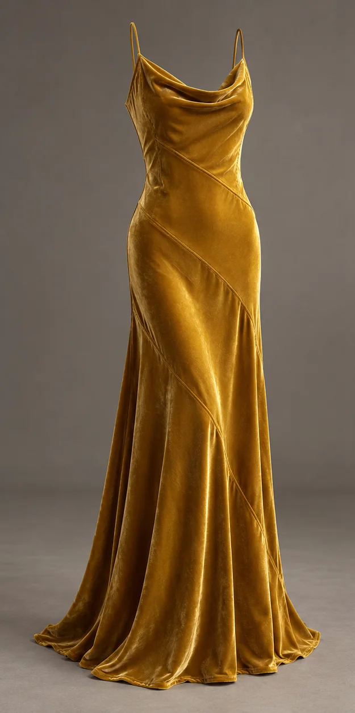
Bias-cut velvet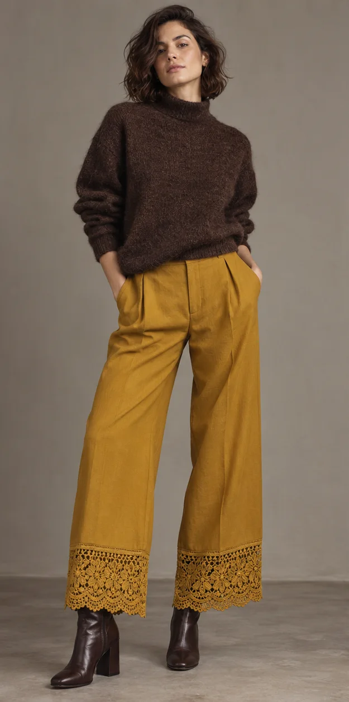
Lace-trimmed hems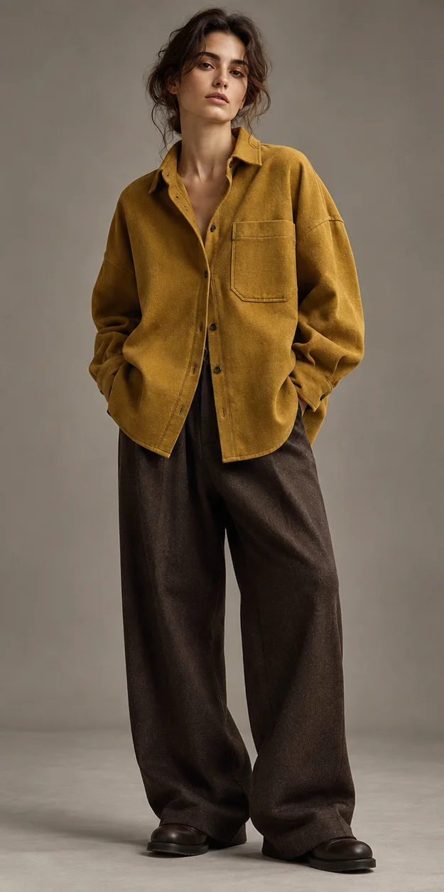
Oversized boyfriend shirts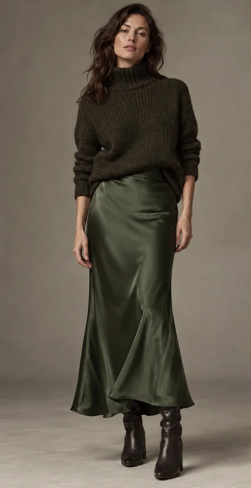
Satin slip skirtsSources: Red Carpet Fashion Awards. Europe forecast →
Clayface premiere and DeMellier flagship opening
London, UK
- Naomi Ackie · Dilara Fındıkoğlu (Fall 2025)
Black lace-up corset dress. - Simone Ashley · TOVE
Red dress with black mules and a black bag. - Céline Dion (Paris) · Chanel Haute Couture (Fall 2026)
Black jacket with a gold chain belt over light-wash wide-leg jeans, on the final night of her Paris residency.
Sources: Red Carpet Fashion Awards. Europe forecast →
Academy Museum Gala
Los Angeles, USA
- Jodie Turner-Smith · Mugler (Spring 2027)
Sculptural zebra-print look with a dramatic headpiece. - Eddie Redmayne · Giorgio Armani (Fall 2026)
Cobalt-blue velvet look. - Diego Calva · Loewe
Black tuxedo with a bright yellow shirt and matching tie. - Charles Melton · Artisanal ERL
Tailcoat with gold embellishment and wide-leg trousers. - Kendall Jenner, Colman Domingo, Elle Fanning, Cailee Spaeny, Clairo · Valentino
Valentino looks across the guest list. - Taylor Swift, Greta Lee · Dior
Dior, with Greta Lee in Dior Haute Couture.
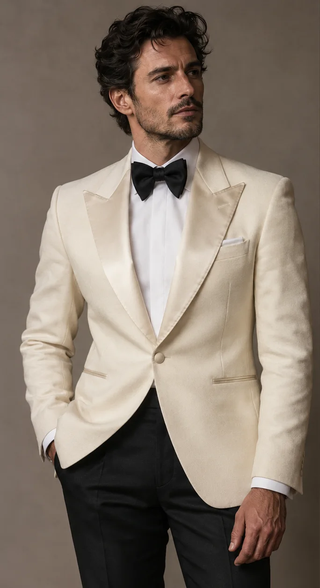
Single-button tuxedo jackets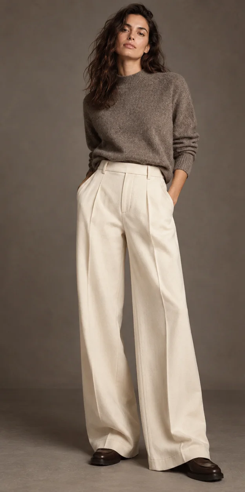
Wide-leg suit trousers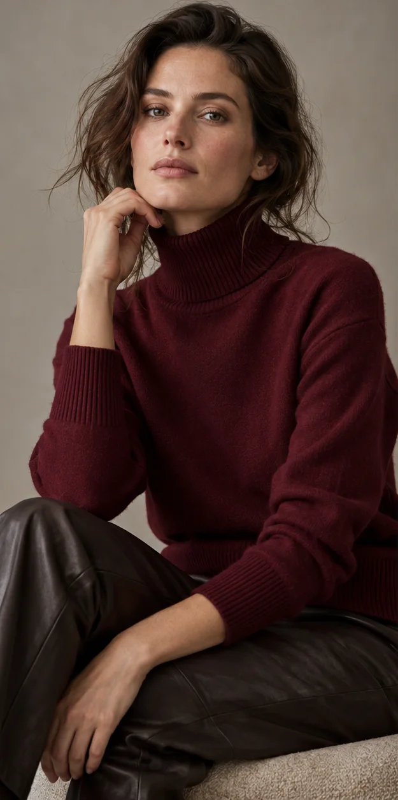
Jewel-tone cashmereSources: Red Carpet Fashion Awards · Just Jared. North America forecast →
Billboard Latin Music Awards and New York screenings
Miami and New York, USA
- Rosalía · Tom Ford (Spring 2027)
Black tuxedo tailoring with a bra top and draped skirt, at the Billboard Latin Music Awards, Miami. - Jenna Ortega · Elias Matso
Steel-boned, crystal-embellished dress at the Klara and the Sun screening, New York. - Helen Mirren · Matières Fécales (Fall 2026)
Black tulle skirt with pearl jewellery, A Talent for Murder premiere, New York.
Sources: Red Carpet Fashion Awards. North America forecast →
Wild Horse Nine premiere
Santiago, Chile
- Mariana di Girolamo · Louis Vuitton
Custom warm-grey draped gown.
Sources: Red Carpet Fashion Awards. South America forecast →
Zlatan Ibile and Davita Omoniyi traditional wedding
Nigeria
- Davita Omoniyi · Dova Bridals
Custom burgundy corseted mermaid gown with a sweetheart neckline, sheer long sleeves, side train and red crystal lattice beading; Okuku braided crown and layered coral. - Zlatan Ibile · Deji & Kola
Custom cream robe under a textured ivory coat with hand-stitched red beadwork at the shoulders and hem; coral beads and ivory cap. - Veekee James · Veekee James
Fitted mermaid gown with a sheer corset bodice in rows of wine-red crystals, high beaded collar, sheer beaded sleeves and gold sequin waves; champagne fan-pleated gele.
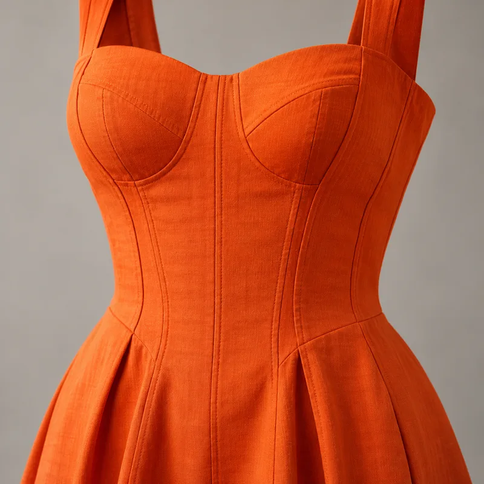
Corset-seamed dressesFishtail gowns with attached drapesSources: BellaNaija · BellaNaija. Africa forecast →
TV WEEK Logie Awards
The Star, Sydney, Australia
- Sonia Kruger · Leah Da Glória
Bronze hand-beaded fringed gown. - Kylie Gillies · Carla Zampatti
Off-shoulder tassel top with a black floor-length skirt. - Rebecca Harding · Steven Khalil
Silver gown with fur trim. - Deborah Mailman
Sequinned black suit. - Ada Nicodemou · Leah Da Glória
Custom blue gown.
Sources: Mamamia. Oceania forecast →
Why celebrity looks matter to a forecast
Red carpets, premieres, award shows and high-profile weddings are where runway ideas first meet a mass audience. A look worn by a film star or a musician is photographed thousands of times, searched for within hours and copied by fast-fashion and occasion-wear brands within weeks. That makes celebrity dressing one of the earliest public signals of which runway ideas will travel. Forecut does not treat a single famous outfit as a trend. We treat it as evidence: when the same detail appears on several red carpets, in more than one region, and also on the runway or in retail launches, it supports moving that detail from emerging to rising.
Each event on this page lists who wore what and who designed it, as reported by public sources, followed by a short Forecut read and links to the matching details in the forecast. We never publish celebrity, red-carpet or agency photographs; the details link to Forecut's own illustrations instead.
How to use this page
- Designers: look at construction, not the whole outfit. A corset blouse, a velvet jacket or a beaded hem can be adapted to your own customer at your own price.
- Buyers and merchandisers: watch for repeats. One star in velvet is styling; five red carpets in velvet in two continents is a buying signal for the next season.
- Occasion and bridal brands: wedding and festive celebrity looks (Mumbai, Lagos, Dubai) move faster into retail than film-premiere looks, because customers have a date to dress for.
- Marketing teams: note which designers dress which stars in which market; local labels dressing local stars often matter more to sales than global houses.
Reading celebrity style by region
North America sets the volume: the Academy Museum Gala, award shows and premieres in Los Angeles and New York put next season's runway pieces on camera months before stores. Europe gives tailoring and couture signals through London, Paris, Rome and Venice. Asia is driven by Bollywood festive and wedding dressing in India, K-pop and C-pop brand ambassadors, and Gulf society events; these looks translate into retail very quickly. Africa's strongest influence comes from Nigerian weddings, Nollywood and Afrobeats stars, often dressed by local designers. South America mixes telenovela and music stars with São Paulo and Buenos Aires designers. Oceania's red carpets (the Logies, AACTA Awards, Melbourne Cup) favour Australian designers and land in the southern-hemisphere summer party season.
Common questions
Does a celebrity look make something a trend? No. It is one signal among many. Forecut changes a detail's stage only when red-carpet evidence agrees with runway, retail and trade coverage.
Why are some designers listed as blank? Some reports describe an outfit without naming who made it. We only credit a designer when a public source does.
How often is this page updated? Every week, with the newest events at the top. Older events stay, so you can follow how a look spreads over a season.
Can I use these looks in a mood board? Use the source links to view the original photographs, and respect each photographer's and publication's rights. Forecut's own detail images can be used in internal briefs with credit.